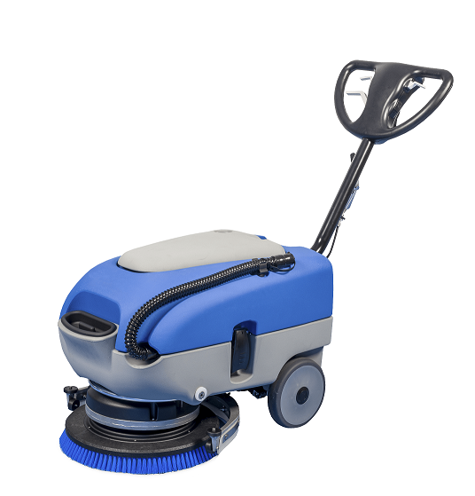
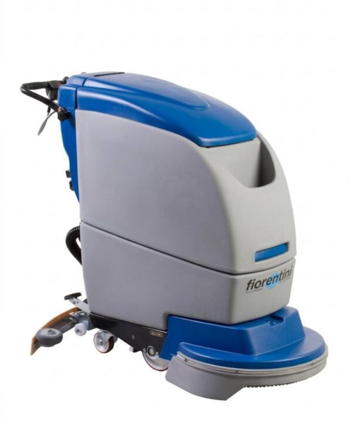
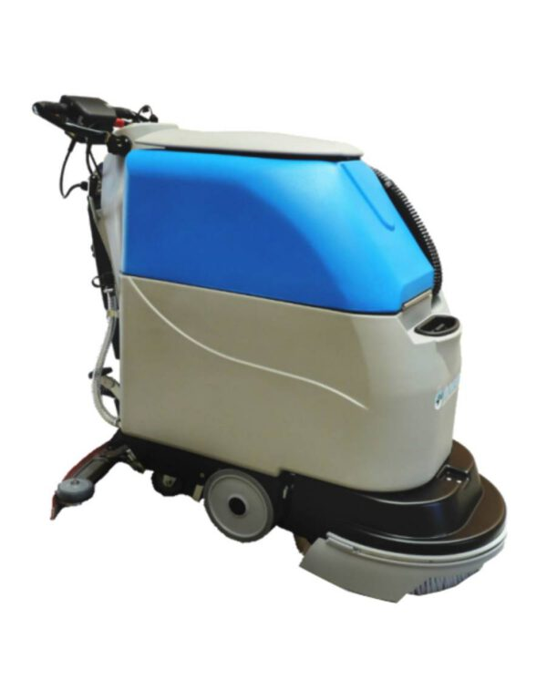
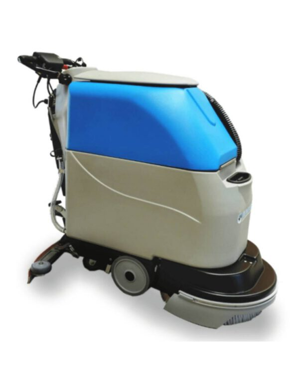
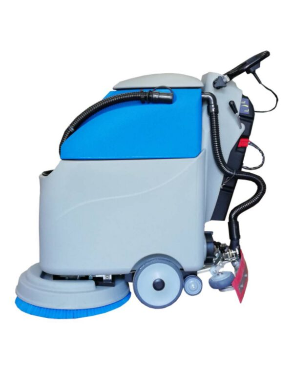
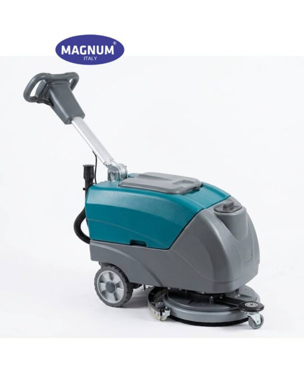
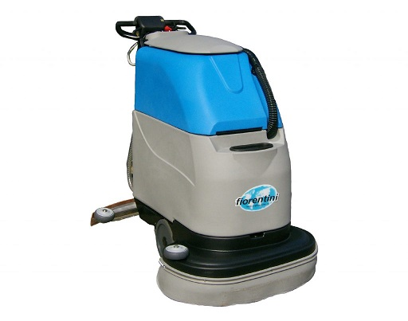
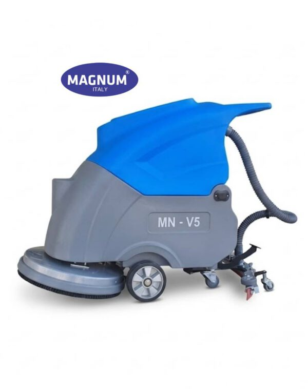
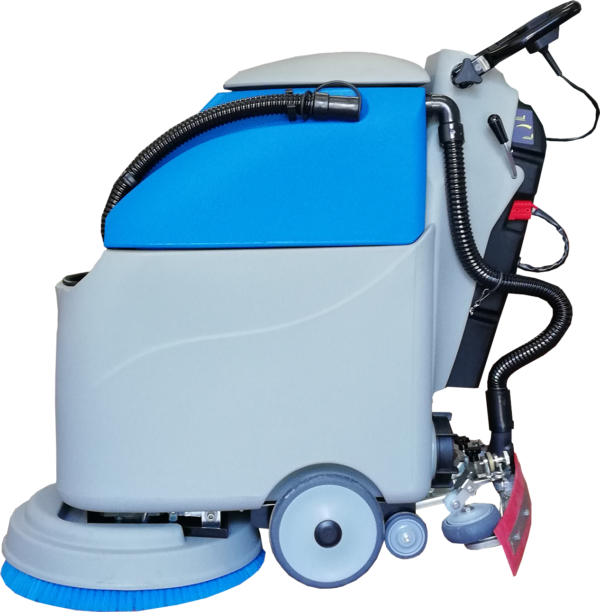

Máy chà sàn công nghiệp
40 sản phẩm - giá liên hệ báo giá

Máy chà sàn đẩy tay Magnum MN-V51

Máy chà sàn Fiorentini model DELUX 43BM

Máy chà sàn Fiorentini model GIAMPY 20B

Máy chà sàn Fiorentini model GIAMPY 20E

Máy chà sàn Fiorentini model I18B

Máy chà sàn giặt thảm đơn Magnum BF522

Máy chà sàn liên hợp chạy điện Magnum A-4E

Máy chà sàn liên hợp đẩy tay A-45B

Máy chà sàn liên hợp đẩy tay A-55B

Máy chà sàn liên hợp đẩy tay A-5B

Máy chà sàn liên hợp đẩy tay A-6B

Máy chà sàn liên hợp đẩy tay chạy bình acquy Magnum A-4B

Máy chà sàn liên hợp đẩy tay Giampy FIORENTINI (Ý)

Máy chà sàn liên hợp đẩy tay Magnum A-4B

Máy chà sàn liên hợp đẩy tay Magnum V5

Máy chà sàn liên hợp FIORENTINI model I16-18-20

Máy chà sàn liên hợp MAGNUM A-7R

máy chà sàn liên hợp MAGNUM A-9R

Máy chà sàn liên hợp ngồi lái Ecosmart

Máy chà sàn liên hợp ngồi lái Ecosmile

Máy chà sàn liên hợp ngồi lái Ecostar

Máy chà sàn liên hợp ngồi lái Magnum A-11R

Máy chà sàn liên hợp ngồi lái Magnum MN-V70
Máy chà sàn đã trở thành một phần không thể thiếu trong việc vệ sinh và duy trì sự sạch sẽ cho mọi không gian, từ những căn nhà nhỏ tới các khu công nghiệp rộng lớn. Với sự phát triển của công nghệ, các loại máy lau sàn công nghiệp ngày càng được cải tiến với nhiều tính năng hiện đại, giúp tăng cường hiệu suất làm việc và tiết kiệm thời gian. Trong bối cảnh môi trường sống và làm việc ngày càng quan trọng, máy chà sàn đã trở thành một công cụ không thể thiếu trong việc duy trì vệ sinh và an toàn. Hãy cùng khám phá những ưu điểm và lợi ích mà máy chà sàn mang lại trong việc bảo vệ môi trường sống và nâng cao chất lượng cuộc sống của chúng ta.
Giới thiệu máy chà sàn
Máy chà sàn hay còn được gọi là Floor Scrubber được biết đến là một thiết bị vệ sinh công nghiệp chuyên dụng để làm sạch các loại bề mặt sàn như đá, gạch và thảm. Được sử dụng phổ biến trong cả các công trình dân dụng và công nghiệp, máy chà sàn giúp chăm sóc và duy trì sạch sẽ cho các khu vực như nhà ở, tòa nhà thương mại, nhà máy, kho bãi, bãi đậu xe, sân bay, trung tâm mua sắm và các khu vực công cộng khác.
Thông tin chi tiết liên quan về máy chà sàn
Ngày nay, có nhiều loại máy vệ sinh sàn khác nhau được sử dụng tùy thuộc vào mục đích sử dụng cụ thể. Một số máy chà sàn có kích thước nhỏ, phù hợp cho việc sử dụng trong các khu vực dân dụng, trong khi đó, các máy chà sàn lớn hơn thường được ưa chuộng trong các môi trường công nghiệp. Một số loại máy chà sàn được trang bị bộ lọc để giảm thiểu bụi và hóa chất trong quá trình sử dụng.
Tại sao nên lựa chọn máy chà sàn công nghiệp?
Đầu tư vào máy chà sàn không chỉ giúp quá trình làm sạch và bảo trì sàn nhà diễn ra nhanh chóng và hiệu quả hơn, mà còn mang lại những lợi ích tuyệt vời cho người sử dụng, bao gồm:
Dùng máy chà sàn vệ sinh hàng lang
Làm sạch một cách nhanh chóng và hiệu quả
Máy chà sàn thực hiện việc làm sạch sâu, loại bỏ các mảng bẩn và vết bẩn khó chịu một cách nhanh chóng và hiệu quả. Được trang bị động cơ mạnh mẽ và các phụ kiện đi kèm, máy chà sàn giúp quá trình đánh bóng và làm sạch sàn trở nên dễ dàng hơn. Đặc biệt, máy có khả năng hoạt động liên tục trong nhiều giờ, mang lại hiệu suất làm sạch cao, đạt từ 2000 đến 5000m²/giờ.
Tiết kiệm công sức và thời gian chà sàn
Sử dụng máy chà sàn công nghiệp không chỉ giúp quá trình vệ sinh diễn ra nhanh chóng hơn, mà còn tiết kiệm thời gian và công sức. Khi kết hợp với máy lau sàn nhà xưởng công nghiệp, hiệu quả mang lại sẽ gấp nhiều lần so với phương pháp làm sạch thủ công.
Chi phí cho thuê nhân công giảm đáng kể
Một máy chà sàn công nghiệp chất lượng thường có tuổi thọ sử dụng từ 5 đến 15 năm. Đặc biệt, máy chà sàn xưởng có khả năng hoạt động liên tục mà không gây gián đoạn quá trình làm việc. Điều này không chỉ giúp giảm chi phí thuê nhân công vệ sinh mà còn đảm bảo hiệu quả vệ sinh.
Máy hỗ trợ quá trình giặt thảm hiệu quả
Một số loại máy chà sàn tích hợp phụ kiện pad chà thảm, giúp đánh bay các vết bẩn khó như hóa chất hoặc mực trên thảm. Điều này giúp quá trình giặt thảm trở nên dễ dàng và hiệu quả hơn cho cả gia đình và doanh nghiệp. Đầu chà của máy được thiết kế để có thể tháo rời và thay thế, phục vụ cho mọi loại thảm một cách linh hoạt và thuận tiện.
Các loại máy chà sàn phổ biến
Máy chà sàn có thể được phân loại theo nhiều tiêu chí khác nhau, bao gồm thiết kế, tính năng và công suất. Hiện nay, trên thị trường, các loại máy vệ sinh sàn thường được chia thành 3 nhóm cơ bản như sau:
Máy lau sàn ngồi lái
Máy lau sàn nhà công nghiệp ngồi lái sở hữu công suất mạnh mẽ, vượt trội hơn đáng kể so với hai loại máy khác. Sản phẩm được trang bị động cơ motor mạnh mẽ, đảm bảo hiệu suất làm việc ổn định. Máy có thể hoạt động liên tục trên các khu vực có diện tích mặt sàn lớn như sân bay, nhà ga, trung tâm thương mại...
Máy chà sàn ngồi lái là loại máy hiện đại nhất hiện nay với việc tích hợp ghế ngồi, mang lại sự thuận tiện trong việc điều khiển. Điều này không chỉ tạo ra môi trường làm việc chuyên nghiệp và thoải mái mà còn giúp tiết kiệm công sức cho người sử dụng. Tuy nhiên, giá thành của máy chà sàn ngồi lái khá cao và thích hợp cho các không gian có diện tích lớn.
Máy chà sàn liên hợp
Máy chà sàn liên hợp là sự nâng cấp với khả năng chà và hút nước bẩn vượt trội, đảm bảo sàn luôn sạch và khô ngay sau khi máy đi qua. Điều này giúp quá trình vệ sinh sàn xưởng diễn ra nhanh chóng mà không gây ra vấn đề nước bẩn khi máy di chuyển qua các bề mặt sàn. Kết quả là tiết kiệm thời gian và công sức, nâng cao hiệu suất làm việc.
Tuy nhiên, máy chà sàn liên hợp thường có kích thước lớn, phù hợp với các khu vực có diện tích mặt sàn rộng. Loại máy này có thể hoạt động bằng nguồn điện trực tiếp hoặc dùng bình ắc quy, tùy thuộc vào nhu cầu cụ thể mà người dùng có thể lựa chọn sản phẩm phù hợp nhất.
Máy chà sàn đơn
Máy chà sàn đơn là dòng máy chà sàn mini có thiết kế nhỏ gọn, được trang bị một motor tốc độ cao và dây điện dài từ 8m đến 12m (tùy loại). Loại máy này có hai chức năng chính là chà vệ sinh và rửa mặt sàn, cũng như đánh bóng sàn. Với kiểu dáng nhỏ gọn và linh hoạt, máy có thể dễ dàng tiếp cận vào các khu vực hẹp để làm sạch các vết bẩn khó khăn.
Máy chà sàn đơn thường có giá khá rẻ, phù hợp cho việc sử dụng trong các khu vực có diện tích nhỏ như văn phòng, gia đình hoặc cửa hàng kinh doanh nhỏ. Tuy nhiên, máy chưa tích hợp chức năng hút nước bẩn sau khi làm sạch, do đó cần phải sử dụng kết hợp với máy hút bụi và nước để đảm bảo hiệu quả vệ sinh tối ưu.
Tiêu chí lựa chọn máy chà sàn phù hợp nhu cầu
Trong quá trình lựa chọn máy chà sàn, chúng ta cần xem xét đến các yếu tố sau:
Loại máy chà sàn: Có nhiều loại máy chà sàn khác nhau bao gồm máy chà sàn đơn, máy chà sàn ngồi lái và máy chà sàn tự động. Tùy thuộc vào nhu cầu cụ thể mà bạn nên chọn loại phù hợp với diện tích và mức độ bẩn của sàn.
Kích thước và trọng lượng: Kích thước và trọng lượng của máy chà sàn cũng là một yếu tố quan trọng cần xem xét, đặc biệt là khi bạn cần di chuyển máy chà sàn nhiều. Bạn nên chọn máy có kích thước và trọng lượng phù hợp với nhu cầu sử dụng của bạn.
Công suất và hiệu suất làm việc: Công suất và hiệu suất làm việc của máy chà sàn là một yếu tố quan trọng để đảm bảo máy hoạt động hiệu quả trên mọi loại sàn. Bạn nên chọn máy có công suất và hiệu suất phù hợp với nhu cầu sử dụng của bạn.
Khả năng làm sạch và độ bền: Khả năng làm sạch và độ bền của máy chà sàn cũng là một yếu tố quan trọng. Bạn nên chọn máy có khả năng làm sạch sâu và độ bền cao để sử dụng trong thời gian dài.
Tiện ích và tính năng: Một số tính năng tiện ích của máy chà sàn bao gồm khả năng xoay 360 độ, tính năng tháo lắp và vệ sinh dễ dàng, chế độ tự động hóa và khả năng chống lại va đập. Bạn nên chọn máy có tính năng và tiện ích phù hợp với nhu cầu sử dụng của bạn.
Thương hiệu và giá cả: Thương hiệu và giá cả của máy chà sàn cũng là một yếu tố quan trọng. Bạn nên chọn máy từ các thương hiệu uy tín và có giá cả phù hợp với ngân sách của bạn.
Máy chà sàn vệ sinh sàn siêu thị
Tính năng và thông số kỹ thuật của các dòng máy lau sàn
Máy lau sàn ngồi lái
Các tính năng:
Lau sàn, hút bụi bẩn và nước bẩn trong cùng một lúc.
Di chuyển dễ dàng với tay lái điều khiển.
Hiệu quả làm sạch cao với diện tích lớn.
Tiết kiệm thời gian và công sức.
Thông số kỹ thuật:
| Công suất | 1000W - 2000W |
|---|---|
| Điện áp | 220V |
| Tốc độ quay | 150 - 300 vòng/phút |
| Kích thước bàn chải | 400mm - 500mm |
| Dung tích thùng chứa nước sạch | 10L - 20L |
| Dung tích thùng chứa nước bẩn | 15L - 25L |
| Trọng lượng | 50kg - 100kg |
Máy chà sàn liên hợp
Tính năng:
Vừa có chức năng chà, vừa có chức năng hút bụi bẩn và nước bẩn.
Làm sạch sàn nhanh chóng và hiệu quả.
Phù hợp cho nhiều loại sàn khác nhau.
Thông số kỹ thuật:
| Công suất | 1500W - 2500W |
|---|---|
| Điện áp | 220V |
| Tốc độ quay | 175 - 350 vòng/phút |
| Kích thước bàn chải | 430mm - 530mm |
| Dung tích thùng chứa nước sạch | 20L - 30L |
| Dung tích thùng chứa nước bẩn | 25L - 35L |
| Trọng lượng | 60kg - 120kg |
Máy chà sàn đơn
Tính năng:
Chỉ có chức năng chà sàn.
Làm sạch sàn hiệu quả với diện tích nhỏ.
Dễ dàng sử dụng và di chuyển.
Thông số kỹ thuật:
| Công suất | 1000W - 1500W |
|---|---|
| Điện áp | 220V |
| Tốc độ quay | 150 - 300 vòng/phút |
| Kích thước bàn chải | 350mm - 450mm |
| Trọng lượng | 20kg - 40kg |
Hướng dẫn sử dụng máy chà sàn hiệu quả
Trước khi sử dụng:
Đọc kỹ hướng dẫn sử dụng của nhà sản xuất.
Kiểm tra xem máy chà sàn đã được lắp ráp đúng cách hay chưa.
Đảm bảo nguồn điện cung cấp cho máy chà sàn ổn định.
Chuẩn bị khu vực cần làm sạch: dọn dẹp các vật cản, rác thải và lau khô sàn nhà.
Cách sử dụng:
Bước 1: Pha dung dịch tẩy rửa theo hướng dẫn của nhà sản xuất.
Bước 2: Đổ dung dịch tẩy rửa vào bình chứa của máy chà sàn.
Bước 3: Bật máy chà sàn và điều chỉnh tốc độ phù hợp với loại sàn cần làm sạch.
Bước 4: Chà sàn theo từng khu vực nhỏ, di chuyển máy chà sàn chậm rãi và đều đặn.
Bước 5: Hút nước bẩn sau khi chà sàn.
Bước 6: Lau khô sàn nhà bằng khăn sạch.
Bảng giá máy chà sàn được phân chia theo thương hiệu, phân khúc
Phân loại theo thương hiệu:
Thương hiệu
Mức giá (VNĐ)
MAGNUM
☑️ Máy chà sàn đẩy tay Magnum MN-V5
40 triệu - 50 triệu
☑️ Máy chà sàn có người lái Magnum MN-V6
100 triệu - 110 triệu
☑️ Máy chà sàn có người lái Magnum MN-V7
200 triệu - 210 triệu
☑️ Máy chà sàn có người lái Magnum MN-V8
240 triệu - 250 triệu
☑️ Máy chà sàn liên hợp ngồi lái Magnum MN-V75
125 triệu - 135 triệu
☑️ Magnum MN-522
5 triệu - 10 triệu
☑️ Máy chà sàn liên hợp mini Magnum A-1
20 triệu - 30 triệu
☑️ Máy chà sàn liên hợp mini Magnum A-4E
20 triệu - 30 triệu
☑️ Máy chà sàn liên hợp mini Magnum A-4B
20 triệu - 30 triệu
☑️ Máy chà sàn liên hợp đẩy tay Magnum A-5E
20 triệu - 30 triệu
☑️ Máy chà sàn liên hợp đẩy tay Magnum A-5B
35 triệu - 45 triệu
☑️ Máy chà sàn liên hợp ngồi lái Magnum A-7R
75 triệu - 85 triệu
☑️ Máy chà sàn liên hợp ngồi lái Magnum A-9R
105 triệu - 115 triệu
☑️ Máy chà sàn liên hợp ngồi lái Magnum A-10R
130 triệu - 150 triệu
☑️ Máy chà sàn liên hợp ngồi lái Magnum A-11R
170 triệu - 190 triệu
☑️ XE LAU SÀN NGỒI LÁI MAGNUM MN–CT906
25 triệu - 35 triệu
☑️ XE LAU SÀN NGỒI LÁI MAGNUM MN–CT903
30 triệu - 40 triệu
FIORENTINI
☑️ Máy chà sàn đơn-chà thảm công nghiệp Fiorentini JOLLY 17
15 triệu - 20 triệu
☑️ Máy chà sàn liên hợp Fiorentini I18E
45 triệu - 50 triệu
☑️ Máy chà sàn liên hợp Fiorentini DELUX 43BM
65 triệu - 70 triệu
☑️ Máy chà sàn liên hợp Fiorentini GIAMPY 20B
65 triệu - 70 triệu
☑️ Máy chà sàn liên hợp Fiorentini I18B
75 triệu - 80 triệu
Phân loại theo phân khúc:
Loại phân khúc
Mức giá (VNĐ)
PHÂN KHÚC CAO CẤP
☑️ Máy chà sàn liên hợp
50 triệu - 200 triệu
☑️ Máy chà sàn ngồi lái
40 triệu - 150 triệu
PHÂN KHÚC TẦM TRUNG
☑️ Máy chà sàn đơn
15 triệu - 50 triệu
☑️ Máy chà sàn liên hợp mini
20 triệu - 80 triệu
PHÂN KHÚC GIÁ RẺ
☑️ Máy chà sàn cầm tay
8 triệu - 30 triệu
☑️ Máy chà sàn mini
6 triệu - 25 triệu
Lưu ý: Đây chỉ là thông tin giá bán tham khảo, giá có thể sẽ chênh lệch.Hãy liên hệ 024 22 00 9188 để được báo giá chính xác nhất tại thời điểm gọi đến.
Địa chỉ mua máy chà sàn công nghiệp, nhà xưởng chất lượng
ICD GREEN TECH - Chuyên gia cung cấp máy chà sàn công nghiệp, nhà xưởng chất lượng
Máy chà sàn công nghiệp, nhà xưởng hiệu quả, bền bỉ
Giá cả cạnh tranh, dịch vụ chuyên nghiệp
Đơn vị uy tín, giàu kinh nghiệm
Chúng tôi cung cấp:
Đa dạng các loại máy chà sàn phù hợp với mọi nhu cầu:
Máy chà sàn liên hợp
Máy chà sàn đơn
Máy hút bụi công nghiệp
Máy móc chính hãng, chất lượng cao từ các thương hiệu nổi tiếng
Giá cả cạnh tranh, nhiều chương trình ưu đãi hấp dẫn.
Dịch vụ tư vấn, hỗ trợ kỹ thuật chuyên nghiệp.
Bảo hành chính hãng, chế độ hậu mãi chu đáo.
Các câu hỏi về máy chà sàn nhà xưởng, công nghiệp
Máy chà sàn có tốt hơn chà sàn thủ công không?
Có, máy chà sàn tốt hơn chà sàn thủ công:
Hiệu quả cao hơn: Máy chà sàn sử dụng động cơ mạnh mẽ, làm sạch nhanh và hiệu quả hơn.
Sạch hơn: Máy chà sàn sử dụng bàn chải và lực hút mạnh mẽ, loại bỏ bụi bẩn, vi khuẩn tốt hơn.
An toàn hơn: Máy chà sàn hạn chế nguy cơ đau lưng, tiếp xúc hóa chất.
Tiết kiệm chi phí: Máy chà sàn tiết kiệm thời gian, công sức, giảm chi phí hóa chất.
Nên sử dụng loại nước lau sàn nào cho máy chà sàn?
Nên sử dụng nước lau sàn chuyên dụng cho máy chà sàn. Loại nước lau sàn này có độ pH trung tính, không chứa chất độc hại, an toàn cho máy và sàn nhà.
Cách bảo quản máy chà sàn để sử dụng lâu bền?
Cách bảo quản máy chà sàn để sử dụng lâu bền:
Sau khi sử dụng:
Vệ sinh sạch sẽ máy chà sàn, đặc biệt là phần bàn chải và thùng chứa nước bẩn.
Lau khô máy bằng khăn mềm.
Bảo quản máy ở nơi khô ráo, thoáng mát.
Bảo trì định kỳ:
Tra dầu mỡ cho các bộ phận chuyển động của máy.
Kiểm tra và thay thế các bộ phận bị hao mòn.
Nên vệ sinh máy chà sàn bao lâu một lần?
Việc vệ sinh máy chà sàn sau mỗi lần sử dụng sẽ giúp:
Loại bỏ bụi bẩn, nước bẩn bám trên máy, giúp máy hoạt động hiệu quả hơn.
Ngăn ngừa vi khuẩn và nấm mốc phát triển.
Giúp máy bền bỉ hơn.
Ngoài ra, bạn nên bảo trì định kỳ máy chà sàn 3 tháng một lần.
Máy chà sàn đã trở thành một công cụ quan trọng trong việc vệ sinh và bảo dưỡng sàn nhà, từ các căn hộ, văn phòng cho đến các khu công nghiệp và thương mại. Việc lựa chọn và sử dụng máy chà sàn đúng cách không chỉ giúp tiết kiệm thời gian và công sức mà còn đảm bảo hiệu quả vệ sinh cao nhất. Chúng ta cần hiểu rõ các tiêu chí và quy tắc an toàn khi sử dụng máy chà sàn, cũng như bảo trì và vệ sinh định kỳ máy để đảm bảo tuổi thọ và hiệu suất hoạt động tốt nhất. Máy chà sàn không chỉ đơn thuần là một công cụ, mà còn là người bạn đồng hành đáng tin cậy trong việc duy trì sạch sẽ và an toàn cho môi trường sống và làm việc của chúng ta.
Cần tư vấn chọn máy đúng nhu cầu?Kỹ thuật viên ICD báo giá trong ngày. Hotline 02422 009 188.
Nhận báo giá Cho thuê máy chà sàn công nghiệp tại Hà Nội – 02422009188
Cho thuê máy chà sàn công nghiệp tại Hà Nội – 02422009188 Tư vấn cách chọn lựa máy chà sàn nhà gia đình
Tư vấn cách chọn lựa máy chà sàn nhà gia đình Có nên mua máy hút bụi công nghiệp cho gia đình?
Có nên mua máy hút bụi công nghiệp cho gia đình?